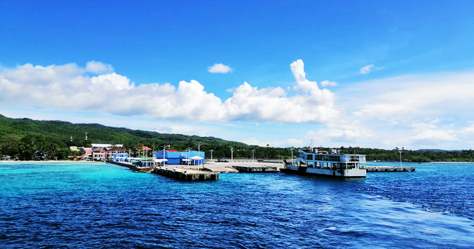
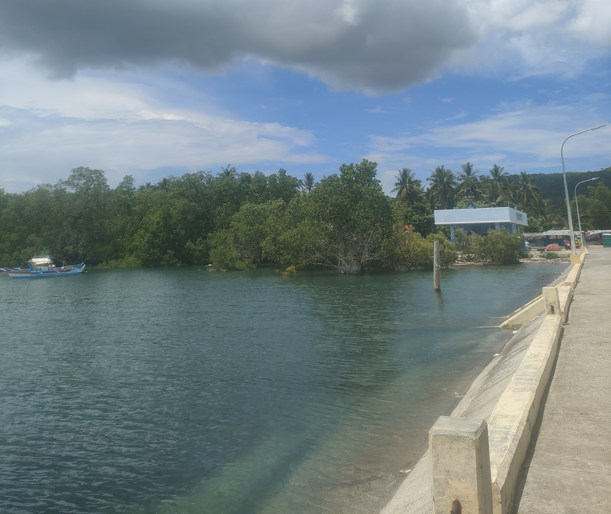

Hooked on happiness
Cast away your worries
Where every cast is a new adventure
Tide and time wait for no angler

Reel in the calm of the sea

Discover the wonders of fishing ports and peaceful fishing spots